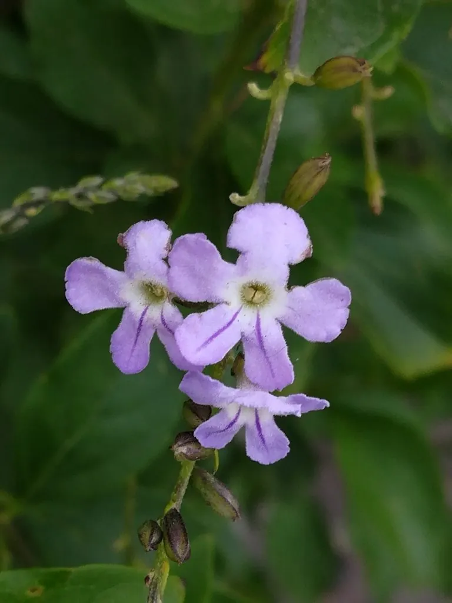

灌木与花木 · 植物界
金露花 Duranta erecta

马鞭草科金露花属常绿灌木，花冠蓝紫色、边缘白色，果序下垂如金色露珠，是南方绿篱与观花观果植物。
- 分类
- 门被子植物门纲木兰纲目唇形目科马鞭草科属金露花属
- 栖息环境
- 热带美洲灌丛与林缘，喜温暖、阳光充足，耐旱耐修剪
- 地理分布
- 原产热带美洲；中国华南、西南及世界热带地区栽培或归化
- 保护级别
- IUCN 暂无评估；栽培广泛，部分地区归化
物种志
金露花为常绿灌木，高 2–3 米，枝细长，常下垂，具刺。叶片对生，卵状披针形，长 3–7 厘米，边缘有锯齿。总状花序顶生或腋生，花冠蓝紫色，边缘白色，直径约 2 厘米，花冠筒略弯，花期长；核果球形，成熟时橙黄色，成串下垂，形似金色露珠。
本种原产热带美洲，喜温暖、阳光充足的环境，耐修剪、耐旱，在中国华南常作绿篱、造型灌木与观果植物。它花果俱美，蓝花与金果同株，全年可多次开花。需要注意的是，金露花的果实与叶片含有毒生物碱，误食可引起呕吐、腹泻与神经系统症状，儿童与宠物应避免接触。其枝条带刺，栽植时需留出通行空间。在华南，它常被修剪成方形或球形绿篱。
形态与习性
- 株高2–3 米，枝细长下垂、具刺
- 花期5–10 月，花蓝紫色、边缘白色
- 果期秋季，核果橙黄色
- 光照喜光，稍耐半阴
- 水分耐旱，忌积水
- 土壤不择土壤，排水良好即可
- 毒性果实与叶片有毒，误食可致呕吐
趣味知识
- 金露花的果实成串下垂、橙黄透亮，像一串金色的露珠，因此得名。
- 它的花蓝紫色而边缘白色，在阳光下有类似蕾丝的效果。
- 金露花原产热带美洲，如今在华南已不同程度归化。
- 它的果实有毒，虽然好看，但绝不能采食。